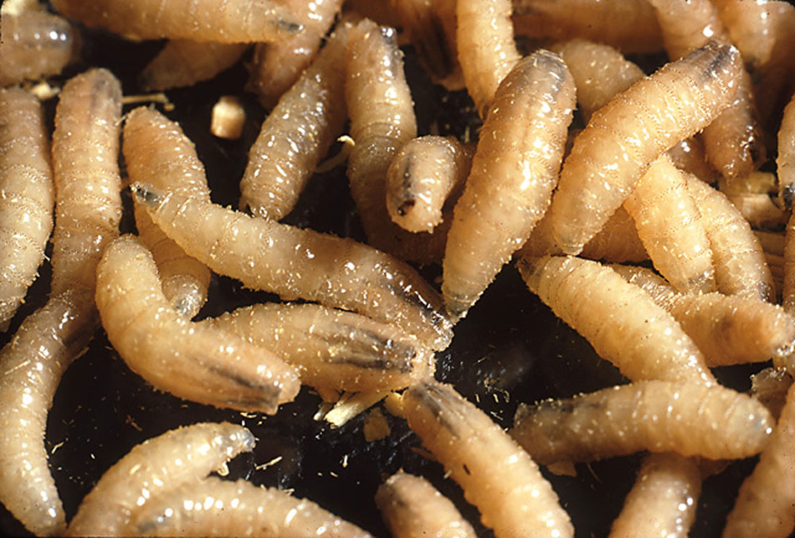
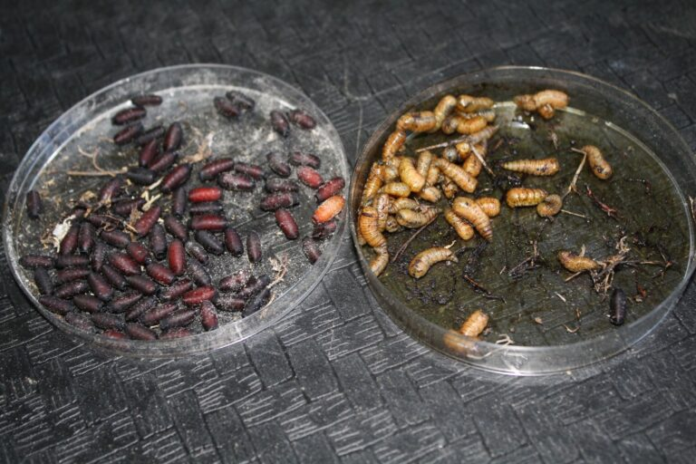

Entomología Forense: Los Testigos Diminutos
A veces, los testigos más confiables en la escena de un crimen no son humanos, sino insectos. La entomología forense es el estudio de los artrópodos e insectos asociados a procesos judiciales. Es una de las herramientas más exactas para determinar el tiempo de muerte cuando los métodos médicos tradicionales (como el rigor mortis) pierden precisión.
Desde el momento en que una persona fallece, el cuerpo emite señales químicas que atraen a dípteros (moscas) en cuestión de minutos. Estos colonizadores iniciales inician un ciclo biológico que funciona como un reloj natural.
LÍNEA DE TIEMPO: CICLO DE VIDA DE LA MOSCA NECRÓFAGA



El Cálculo del Tiempo: IPM
El entomólogo forense no solo mira al insecto; analiza la temperatura ambiental y la humedad. Los insectos son animales poiquilotermos (su metabolismo depende del calor exterior). Al calcular los grados-día acumulados, el científico establece el Intervalo Post-Mortem (IPM) con un margen de error mínimo.
"Si los insectos encontrados no pertenecen al ecosistema donde se halló el cuerpo, el cadáver ha sido trasladado. La fauna cadavérica nunca miente."